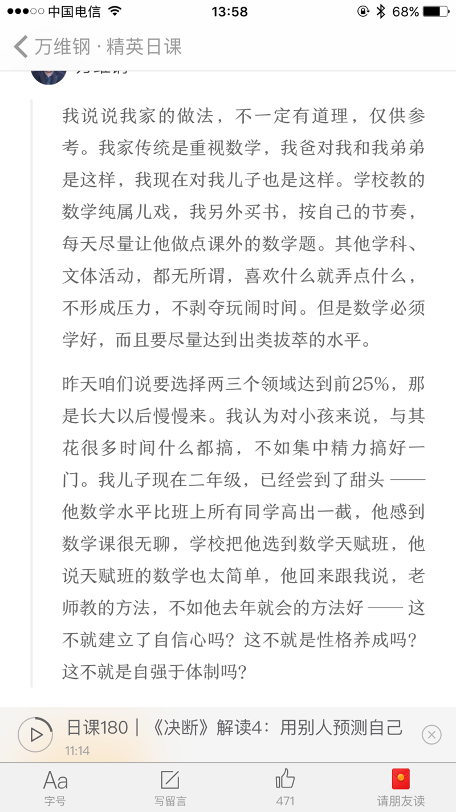

有一种自洽是在自己推演的一套体系中完美循环，却置对方在永恒的错误中。
还有一种来源于正确的原则和科学的方法。
比如：孩子要尝试退出某活动，原因来自灌输的危险就退出的原则。但真正正确的原则是在可控的安全环境下，只有一条是对的，那就是要鼓励孩子多尝试。成功一次，就是自信心的小小积累一次。在一个领域，总是比同龄人做的稍稍好一点，这就是给她了非常大的信心。兴趣也是这样培养出来的，做好了，就喜欢做，就做的多，表现出的就是兴趣。自己的玩耍自己都不负责，只会一味的吩咐和旁观，何来练习，何来做的好，何来兴趣？
举个万维刚教孩子数学的例子，每天让他课外做点数学题，要求数学必须好，甚至要达到出类拔萃的水平。这样就建立自信了。如果因为竞争危险一开始就不尝试，有个哪怕数学家的爸爸又如何？

父母中总要有一个人思想要前瞻科学些，才有机会带出守旧的思维模式。前瞻也不是随便前瞻，而是证据有出处的科学上的概念和做法，大多数来自经典的神作，来自于模式的识别，比如「无条件养育」「看见成长的自己」。所以为了更好的交流，双方最好一起一起看看这些书，多知道些概念。
我们都是观念的产物，脑子里没有的概念，我们是根本不会为此烦恼的。就像脑子里没有 “注意力”这个概念的人，是不会因为自己被各种八卦吸引，而感觉到任何损失的。如果没这些概念怎么介入都没用，相当于2个物种在对话，结果就总是会遭对方抱怨。一方永恒自洽，一方永恒错误。
一个典型的例子就是，老婆把完美表演中的好老公的模版往其身上套，不爽就说一顿，殊不知现实中哪个老公，哪个老婆能说是模范的？人家对外不都是表演出来的，对内你想知道还真没途径。
你带娃多我就看书多学习下，你生病不能动我就多动下，你做饭了我就帮忙洗碗，一方要睡觉另一方就要配合熄灯，这才是动态平衡，这才是团结的样子，而不是一起外出时各种情绪，或者日常一起玩手机，一起看电视，孩子才是最终的受害者。
我们想尽力的说服对方，不是靠自洽的推演和不讲道理。我是对的，我听你的，仅仅因为在这个事上这个观点确实是对的。大家拿出证据和出处，开一个会对一下一目了然，根本不需要人身攻击和诽谤。这也恰恰是家庭要讲道理的原因。大家都需要反省，都需要机制和协议来约束，社会就是靠这些机制和协议高效运转的，家庭又为何不能借鉴了，所以家庭最好能沉淀出一些日常指南，比如这篇满满家日常指南或者「爸爸给女儿的信」系列。
总拿对方没做的事，顾及不到的事，做的慢的事，没达到自己标准的事说，就真的是对自己太狠了。毕竟环境和人都太复杂了，我们不是太阳，也不是神人，真实世界中不可控因素太多太多了，我们都在其中互相影响，身不由己，结果不如自己的意就一顿牢骚和抱怨，顺带着影响自己和身边人的心情，可不是对自己太狠了吗？！所以这才有一种高手会利用激怒对方在高阶商战上，让对方情绪失控，整盘皆输。而我们凡人能做的只是尽力比昨天更理智而已。
顶多我们都是孩子的卫星，卫星和卫星间更像是互补，而不能抢占同一个位置。你碰一下我，我撞一下你，结果轨道突变，就撞上孩子了。（找不到好比喻，就用这个吧，囧）。